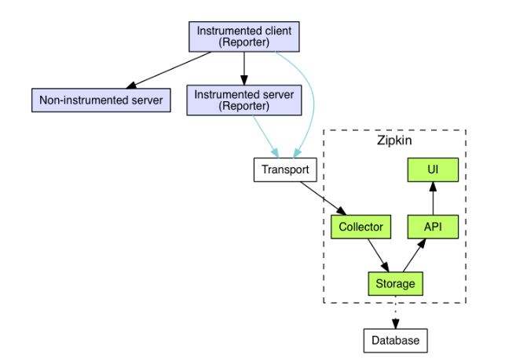
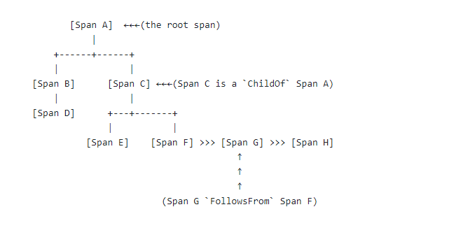
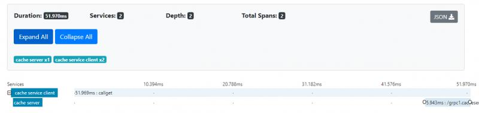
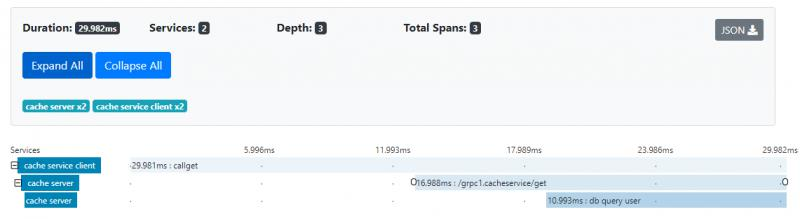
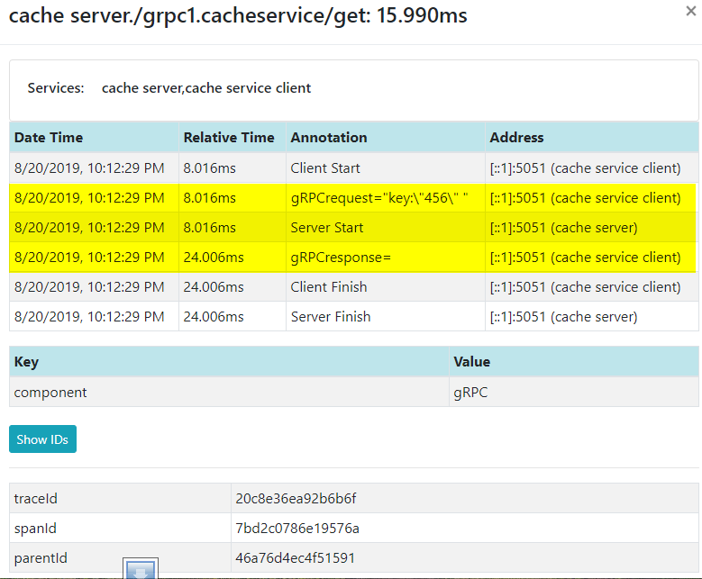
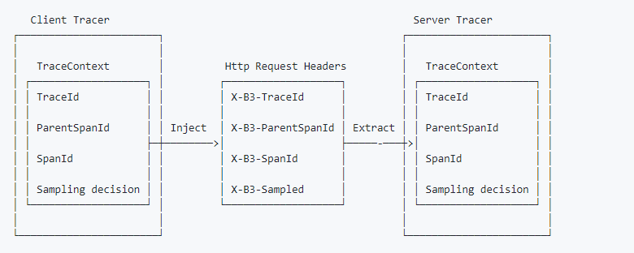

在微服务架构中，调用链是漫长而复杂的，要了解其中的每个环节及其性能，你需要全链路跟踪。 它的原理很简单，你可以在每个请求开始时生成一个唯一的ID，并将其传递到整个调用链。 该ID称为CorrelationID¹，你可以用它来跟踪整个请求并获得各个调用环节的性能指标。简单来说有两个问题需要解决。第一，如何在应用程序内部传递ID; 第二，当你需要调用另一个微服务时，如何通过网络传递ID。
现在有许多开源的分布式跟踪库可供选择，其中最受欢迎的库可能是Zipkin²和Jaeger³。 选择哪个是一个令人头疼的问题，因为你现在可以选择最受欢迎的一个，但是如果以后有一个更好的出现呢？OpenTracing⁴可以帮你解决这个问题。它建立了一套跟踪库的通用接口，这样你的程序只需要调用这些接口而不被具体的跟踪库绑定，将来可以切换到不同的跟踪库而无需更改代码。Zipkin和Jaeger都支持OpenTracing。
在下面的程序中我使用“Zipkin”作为跟踪库，用“OpenTracing”作为通用跟踪接口。 跟踪系统中通常有四个组件，下面我用Zipkin作为示例：
recorder(记录器)：记录跟踪数据
Reporter (or collecting agent)(报告器或收集代理)：从记录器收集数据并将数据发送到UI程序
Tracer：生成跟踪数据
UI：负责在图形UI中显示跟踪数据

上面是Zipkin的组件图，你可以在Zipkin Architecture中找到它。
有两种不同类型的跟踪，一种是进程内跟踪（in-process），另一种是跨进程跟踪（cross-process）。 我们将首先讨论跨进程跟踪。
客户端程序:
我们将用一个简单的gRPC程序作为示例，它分成客户端和服务器端代码。 我们想跟踪一个完整的服务请求，它从客户端到服务端并从服务端返回。 以下是在客户端创建新跟踪器的代码。它首先创建“HTTP Collector”(the agent)用来收集跟踪数据并将其发送到“Zipkin” UI， “endpointUrl”是“Zipkin” UI的URL。 其次，它创建了一个记录器(recorder)来记录端点上的信息，“hostUrl”是gRPC(客户端)呼叫的URL。第三，它用我们新建的记录器创建了一个新的跟踪器(tracer)。 最后，它为“OpenTracing”设置了“GlobalTracer”，这样你可以在程序中的任何地方访问它。
const (
endpoint_url = "http://localhost:9411/api/v1/spans"
host_url = "localhost:5051"
service_name_cache_client = "cache service client"
service_name_call_get = "callGet"
)
func newTracer () (opentracing.Tracer, zipkintracer.Collector, error) {
collector, err := openzipkin.NewHTTPCollector(endpoint_url)
if err != nil {
return nil, nil, err
}
recorder :=openzipkin.NewRecorder(collector, true, host_url, service_name_cache_client)
tracer, err := openzipkin.NewTracer(
recorder,
openzipkin.ClientServerSameSpan(true))
if err != nil {
return nil,nil,err
}
opentracing.SetGlobalTracer(tracer)
return tracer,collector, nil
}以下是gRPC客户端代码。 它首先调用上面提到的函数“newTrace()”来创建跟踪器，然后，它创建一个包含跟踪器的gRPC调用连接。接下来，它使用新建的gRPC连接创建缓存服务(Cache service)的gRPC客户端。 最后，它通过gRPC客户端来调用缓存服务的“Get”函数。
key:="123"
tracer, collector, err :=newTracer()
if err != nil {
panic(err)
}
defer collector.Close()
connection, err := grpc.Dial(host_url,
grpc.WithInsecure(), grpc.WithUnaryInterceptor(otgrpc.OpenTracingClientInterceptor(tracer, otgrpc.LogPayloads())),
)
if err != nil {
panic(err)
}
defer connection.Close()
client := pb.NewCacheServiceClient(connection)
value, err := callGet(key, client)Trace 和 Span:
在OpenTracing中，一个重要的概念是“trace”，它表示从头到尾的一个请求的调用链，它的标识符是“traceID”。 一个“trace”包含有许多跨度(span)，每个跨度捕获调用链内的一个工作单元，并由“spanId”标识。 每个跨度具有一个父跨度，并且一个“trace”的所有跨度形成有向无环图(DAG)。 以下是跨度之间的关系图。 你可以从The OpenTracing Semantic Specification中找到它。

以下是函数“callGet”的代码，它调用了gRPC服务端的“Get"函数。 在函数的开头，OpenTracing为这个函数调用开启了一个新的span，整个函数结束后，它也结束了这个span。
const service_name_call_get = "callGet"
func callGet(key string, c pb.CacheServiceClient) ( []byte, error) {
span := opentracing.StartSpan(service_name_call_get)
defer span.Finish()
time.Sleep(5*time.Millisecond)
// Put root span in context so it will be used in our calls to the client.
ctx := opentracing.ContextWithSpan(context.Background(), span)
//ctx := context.Background()
getReq:=&pb.GetReq{Key:key}
getResp, err :=c.Get(ctx, getReq )
value := getResp.Value
return value, err
}服务端代码:
下面是服务端代码，它与客户端代码类似，它调用了“newTracer()”(与客户端“newTracer()”函数几乎相同)来创建跟踪器。然后，它创建了一个“OpenTracingServerInterceptor”，其中包含跟踪器。 最后，它使用我们刚创建的拦截器(Interceptor)创建了gRPC服务器。
connection, err := net.Listen(network, host_url)
if err != nil {
panic(err)
}
tracer,err := newTracer()
if err != nil {
panic(err)
}
opts := []grpc.ServerOption{
grpc.UnaryInterceptor(
otgrpc.OpenTracingServerInterceptor(tracer,otgrpc.LogPayloads()),
),
}
srv := grpc.NewServer(opts...)
cs := initCache()
pb.RegisterCacheServiceServer(srv, cs)
err = srv.Serve(connection)
if err != nil {
panic(err)
} else {
fmt.Println("server listening on port 5051")
}以下是运行上述代码后在Zipkin中看到的跟踪和跨度的图片。 在服务器端，我们不需要在函数内部编写任何代码来生成span，我们需要做的就是创建跟踪器（tracer），服务器拦截器自动为我们生成span。

上面的图片没有告诉我们函数内部的跟踪细节， 我们需要编写一些代码来获得它。
以下是服务器端“get”函数，我们在其中添加了跟踪代码。 它首先从上下文获取跨度(span)，然后创建一个新的子跨度并使用我们刚刚获得的跨度作为父跨度。 接下来，它执行一些操作(例如数据库查询)，然后结束(mysqlSpan.Finish())子跨度。
const service_name_db_query_user = "db query user"
func (c *CacheService) Get(ctx context.Context, req *pb.GetReq) (*pb.GetResp, error) {
time.Sleep(5*time.Millisecond)
if parent := opentracing.SpanFromContext(ctx); parent != nil {
pctx := parent.Context()
if tracer := opentracing.GlobalTracer(); tracer != nil {
mysqlSpan := tracer.StartSpan(service_name_db_query_user, opentracing.ChildOf(pctx))
defer mysqlSpan.Finish()
//do some operations
time.Sleep(time.Millisecond * 10)
}
}
key := req.GetKey()
value := c.storage[key]
fmt.Println("get called with return of value: ", value)
resp := &pb.GetResp{Value: value}
return resp, nil
}以下是它运行后的图片。 现在它在服务器端有一个新的跨度“db query user”。

以下是zipkin中的跟踪数据。 你可以看到客户端从8.016ms开始，服务端也在同一时间启动。 服务器端完成需要大约16ms。

怎样才能跟踪数据库内部的操作？首先，数据库驱动程序需要支持跟踪，另外你需要将跟踪器(tracer)传递到数据库函数中。如果数据库驱动程序不支持跟踪怎么办？现在已经有几个开源驱动程序封装器(Wrapper)，它们可以封装任何数据库驱动程序并使其支持跟踪。其中一个是instrumentedsql⁷(另外两个是luna-duclos/instrumentedsql⁸和ocsql/driver.go⁹)。我简要地看了一下他们的代码，他们的原理基本相同。它们都为底层数据库的每个函数创建了一个封装(Wrapper)，并在每个数据库操作之前启动一个新的跨度，并在操作完成后结束跨度。但是所有这些都只封装了“database/sql”接口，这就意味着NoSQL数据库没有办法使用他们。如果你找不到支持你需要的NoSQL数据库（例如MongoDB)的OpenTracing的驱动程序，你可能需要自己编写一个封装(Wrapper),它并不困难。
一个问题是“如果我使用OpenTracing和Zipkin而数据库驱动程序使用Openeracing和Jaeger，那会有问题吗？"这其实不会发生。我上面提到的大部分封装都支持OpenTracing。在使用封装时，你需要注册封装了的SQL驱动程序，其中包含跟踪器。在SQL驱动程序内部，所有跟踪函数都只调用了OpenTracing的接口，因此它们甚至不知道底层实现是Zipkin还是Jaeger。现在使用OpenTarcing的好处终于体现出来了。在应用程序中创建全局跟踪器时(Global tracer)，你需要决定是使用Zipkin还是Jaeger，但这之后，应用程序或第三方库中的每个函数都只调用OpenTracing接口，已经与具体的跟踪库(Zipkin或Jaeger)没关系了。
假设我们需要在gRPC服务中调用另外一个微服务(例如RESTFul服务)，该如何跟踪？
简单来说就是使用HTTP头作为媒介（Carrier）来传递跟踪信息(traceID)。无论微服务是gRPC还是RESTFul，它们都使用HTTP协议。如果是消息队列(Message Queue)，则将跟踪信息(traceID)放入消息报头中。(Zipkin B3-propogation有“single header”和“multiple header”有两种不同类型的跟踪信息，但JMS仅支持“single header”)
一个重要的概念是“跟踪上下文(trace context)”，它定义了传播跟踪所需的所有信息，例如traceID，parentId(父spanId)等。有关详细信息，请阅读跟踪上下文(trace context)¹⁰。
OpenTracing提供了两个处理“跟踪上下文(trace context)”的函数：“extract(format，carrier)”和“inject(SpanContext，format，carrier)”。 “extarct()”从媒介（通常是HTTP头）获取跟踪上下文。 “inject”将跟踪上下文放入媒介，来保证跟踪链的连续性。以下是我从Zipkin获取的b3-propagation图。

但是为什么我们没有在上面的例子中调用这些函数呢？让我们再来回顾一下代码。在客户端，在创建gRPC客户端连接时，我们调用了一个为“OpenTracingClientInterceptor”的函数。 以下是“OpenTracingClientInterceptor”的部分代码，我从otgrpc¹¹包中的“client.go”中得到了它。它已经从Go context¹²获取了跟踪上下文并将其注入HTTP头，因此我们不再需要再次调用“inject”函数。
func OpenTracingClientInterceptor(tracer opentracing.Tracer, optFuncs ...Option)
grpc.UnaryClientInterceptor {
...
ctx = injectSpanContext(ctx, tracer, clientSpan)
...
}
func injectSpanContext(ctx context.Context, tracer opentracing.Tracer, clientSpan opentracing.Span)
context.Context {
md, ok := metadata.FromOutgoingContext(ctx)
if !ok {
md = metadata.New(nil)
} else {
md = md.Copy()
}
mdWriter := metadataReaderWriter{md}
err := tracer.Inject(clientSpan.Context(), opentracing.HTTPHeaders, mdWriter)
// We have no better place to record an error than the Span itself :-/
if err != nil {
clientSpan.LogFields(log.String("event", "Tracer.Inject() failed"), log.Error(err))
}
return metadata.NewOutgoingContext(ctx, md)
}在服务器端，我们还调用了一个函数“otgrpc.OpenTracingServerInterceptor”，其代码类似于客户端的“OpenTracingClientInterceptor”。它不是调用“inject”写入跟踪上下文，而是从HTTP头中提取（extract）跟踪上下文并将其放入Go上下文（Go context）中。 这就是我们不需要再次手动调用“extract（）”的原因。 我们可以直接从Go上下文中提取跟踪上下文（opentracing.SpanFromContext（ctx））。 但对于其他基于HTTP的服务（如RESTFul服务）， 情况就并非如此，因此我们需要写代码从服务器端的HTTP头中提取跟踪上下文。 当然，您也可以使用拦截器或过滤器。
你也许会问“如果我的程序使用Zipkin和OpenTracing而需要调用的第三方微服务使用OpenTracing与Jaeger，它们会兼容吗？"它看起来于我们之前询问的数据库问题类似，但实际上很不相同。对于数据库，因为应用程序和数据库在同一个进程中，它们可以共享相同的全局跟踪器，因此更容易解决。对于微服务，这种方式将不兼容。因为OpenTracing只标准化了跟踪接口，它没有标准化跟踪上下文。万维网联盟(W3C)正在制定跟踪上下文(trace context)¹⁰的标准，并于2019-08-09年发布了候选推荐标准。OpenTracing没有规定跟踪上下文的格式，而是把决定权留给了实现它的跟踪库。结果每个库都选择了自己独有的的格式。例如，Zipkin使用“X-B3-TraceId”作为跟踪ID，Jaeger使用“uber-trace-id”，因此使用OpenTracing并不意味着不同的跟踪库可以进行跨网互操作。 对于“Jaeger”来说有一个好处是你可以选择使用“Zipkin兼容性功能"¹³来生成Zipkin跟踪上下文， 这样就可以与Zipkin相互兼容了。对于其他情况，你需要自己进行手动格式转换(在“inject”和“extract”之间)。
尽量少写代码
一个好的全链路跟踪系统不需要用户编写很多跟踪代码。最理想的情况是你不需要任何代码，让框架或库负责处理它，当然这比较困难。 全链路跟踪分成三个跟踪级别：
跨进程跟踪 (cross-process)(调用另一个微服务)
数据库跟踪
进程内部的跟踪 (in-process)(在一个函数内部的跟踪)
跨进程跟踪是最简单的。你可以编写拦截器或过滤器来跟踪每个请求，它只需要编写极少的编码。数据库跟踪也比较简单。如果使用我们上面讨论过的封装器(Wrapper)，你只需要注册SQL驱动程序封装器(Wrapper)并将go-context(里面有跟踪上下文) 传入数据库函数。你可以使用依赖注入(Dependency Injection)这样就可以用比较少的代码来完成此操作。
进程内跟踪是最困难的，因为你必须为每个单独的函数编写跟踪代码。现在还没有一个很好的方法，可以编写一个通用的函数来跟踪应用程序中的每个函数(拦截器不是一个好选择，因为它需要每个函数的参数和返回都必须是一个泛型类型(interface {}))。幸运的是，对于大多数人来说，前两个级别的跟踪应该已经足够了。
有些人可能会使用服务网格(service mesh)来实现分布式跟踪，例如Istio或Linkerd。它确实是一个好主意，跟踪最好由基础架构实现，而不是将业务逻辑代码与跟踪代码混在一起，不过你将遇到我们刚才谈到的同样问题。服务网格只负责跨进程跟踪，函数内部或数据库跟踪任然需要你来编写代码。不过一些服务网格可以通过提供与流行跟踪库的集成，来简化不同跟踪库跨网跟踪时的的上下文格式转换。
跟踪设计:
精心设计的跨度(span)，服务名称(service name)，标签(tag)能充分发挥全链路跟踪的作用，并使之简单易用。有关信息请阅读语义约定(Semantic Conventions)¹⁴。
将Trace ID记录到日志
将跟踪与日志记录集成是一个常见的需求，最重要的是将跟踪ID记录到整个调用链的日志消息中。 目前OpenTracing不提供访问traceID的方法。 你可以将“OpenTracing.SpanContext”转换为特定跟踪库的“SpanContext”(Zipkin和Jaeger都可以通过“SpanContext”访问traceID)或将“OpenTracing.SpanContext”转换为字符串并解析它以获取traceID。转换为字符串更好，因为它不会破坏程序的依赖关系。 幸运的是不久的将来你就不需要它了，因为OpenTracing将提供访问traceID的方法，请阅读这里。
OpenCensus¹⁵不是另一个通用跟踪接口，它是一组库，可以用来与其他跟踪库集成以完成跟踪功能，因此它经常与OpenTracing进行比较。 那么它与OpenTracing兼容吗？答案是否定的。 因此，在选择跟踪接口时(不论是OpenTracing还是OpenCensus)需要小心，以确保你需要调用的其他库支持它。 一个好消息是，你不需要在将来做出选择，因为它们会将项目合并为一个¹⁶。
全链路跟踪包括不同的场景，例如在函数内部跟踪，数据库跟踪和跨进程跟踪。 每个场景都有不同的问题和解决方案。如果你想设计更好的跟踪解决方案或为你的应用选择最适合的跟踪工具或库，那你需要对每种情况都有清晰的了解。
[1]Correlation IDs for microservices architectures
https://hilton.org.uk/blog/microservices-correlation-id
[2]Zipkin
https://zipkin.io
[3]Jaeger: open source, end-to-end distributed tracing
https://www.jaegertracing.io
[4]OpenTracing
https://opentracing.io/docs/getting-started
[5]Zipkin Architecture
https://zipkin.io/pages/architecture.html
[6]The OpenTracing Semantic Specification
https://opentracing.io/specification/
[7]instrumentedsql
https://github.com/ExpansiveWorlds/instrumentedsql
[8]luna-duclos/instrumentedsql
https://github.com/luna-duclos/instrumentedsql
[9]ocsql/driver.go
https://github.com/opencensus-integrations/ocsql/blob/master/driver.go
[10]Trace Context
https://www.w3.org/TR/trace-context/
[11]otgrpc
http://github.com/grpc-ecosystem/grpc-opentracing/go/otgrpc
[12]Go Concurrency Patterns: Context
https://blog.golang.org/context
[13]Zipkin compatibility features
https://github.com/jaegertracing/jaeger-client-go/tree/master/zipkin
[14]Semantic Conventions
https://github.com/opentracing/specification/blob/master/semantic_conventions.md
[15]OpenCensus
https://opencensus.io/
[16]merge the project into one
https://medium.com/opentracing/merging-opentracing-and-opencensus-f0fe9c7ca6f0